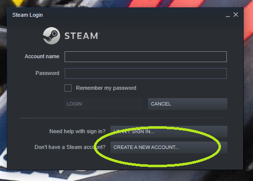

Getting Started
So you want to surf? Great, we're going to go through the steps needed to get you there. If you already have Steam installed on your computer, skip ahead to step 2; and if you already have Counter Strike: Global Offensive (CS:GO) installed, then hop to step 3. Click on a section below to jump to it.
Install Steam
Steam is most popular digital game distribution platform and is required to download CS:GO. To download Steam, follow this link and click on Install Steam.
After you have Steam installed, the next thing you are going to have to do is create a Steam account. When you launch Steam, you should be greeted with the window in the picture below. Click on "CREATE A NEW ACCOUNT", and follow the instructions to make your account.
After you've done that (heads up: you are probably are going to have to confirm your account via an email first), log on to Steam and proceed to step 2.
Install CS:GO
Your next task is to install CS:GO via the Steam Store. With your Steam client open, select the "STORE" tab from the top bar. Use the search bar and simply type in "counter", and Counter Strike: Global Offensive will be one of if not the top option to pop up. Click to navigate to it's Store page.
From the CS:GO Store page, scroll down until you see the box below. Click on "Play Game" and the download process should start. Follow the on screen prompts in order to install the game.
After the download process has completed, you'll find the game under the "LIBRARY" tab from within your Steam client. Double click on the game's name, or click it once and select "PLAY" from the main screen.
Learn the Basics
Super Basics
I'm not going to spend much time here, but if you don't know how to move in 3-D space in a video game, here a crash course for CS:GO:
- Your keyboard keys W, S, A, & D move your character model forward, backward, left, & right respectively.
- You use your mouse to look around and orient your direction
- Space bar is jump
A Brief Overview
The easiest thing for you to do is watch a few videos to wrap your head around surfing before I dive into text description on what to do.
- If you didn't check out the What is Surfing page, then watch this video of a high level surfer completing a map.
- Now that you've been inspired, check out this guide from SurfKultur on YouTube. It's my favorite beginner tutorial video that I have come across. The only thing that it is missing is having keyboard inputs show up on screen as he is describing what to do.
- Another guide that covers the basics and does have keyboard inputs shown on screen is this one by Streebree. Only watch up until 2:05, as the rest of the advice is server or game specific, or it is much too advanced to worry about when starting out.
Join a Server
Time to hop into the game. At this point, I'm going to restrict you to playing on 2 maps, Utopia and Kitsune. They represent the two main styles of non-combat surf maps: linear and stage. Linear maps are a single course: you drop in at the start, surf your way to the finish, and that's the whole map. Stage maps can be thought of as multiple sets of linear courses within a single map. Kitsune for example has 9 stages. Stage maps tend to be much shorter than linear maps, but when you complete all stages they are approximately the same length as linear maps.
You will start on Kitsune first, as you will be able to complete the first few stages after a little practice. Click on the link for Kitsune below, and your browser should give you an option to open "Open Steam Client Bootstraper?". Click on this link, and Steam will open, launch CS:GO, and connect you to the server.
If that doesn't work with your browser, you can add the server to your "Favorites" from within CS:GO via the IP address. Navigate to the "Community Server Browser" and click on the "Favorites" tab. From there, select "Add Server" from the bottom of the box, and find the box for adding via IP address. Do this for each of the servers below, copying only the numeric IP:
- Utopia IP: 192.99.41.233:25155
- Kitsune IP: 158.69.57.87:25145
Now that you're in, start surfing! Practice the techniques from the videos and text guide, being aware that this is very difficult. When you first complete stage 1 of Kitsune I know you'll have had to work for it! Build off that and see how far you can get in Kitsune before it feels like you're no longer making progress. Then it will be time to jump over to the Utopia server. You won't be able to complete the whole map at this point, but each run you can try and get further and further down the course. Rinse and repeat between the two servers to build up your surfing strength. Stage 9 Kitsune is rather difficult, so expect to make it to stage 8 before putting transferring most of your effort into finishing Utopia. Good luck, make sure to check out the Improving page when you want need more instruction.
Hints (Mouseover to Show)
Knowing where to go on a map can be half the battle. You may get lost and not know where it is you need to go to get to the end of a stage or a map, so in addition to the in-server replay function I mentioned above, here are links to players completing Kitsune and Utopia to help you out. Focus on some basics of how they are navigating the course, compare it to what you have been doing, and try and implement some of the general lines they are taking. Besides playing, watching others is the primary method of improving at surfing!
-
Kitsune
-
Utopia